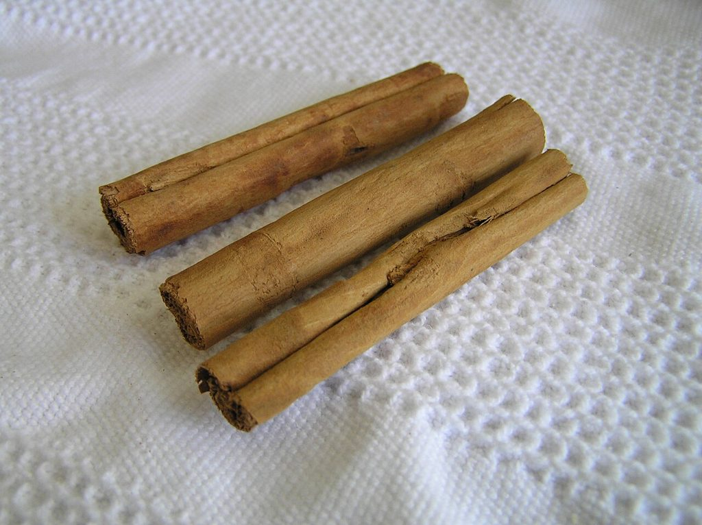

Cikk · Fahéj
Fahéj és vércukor: a pitében finom, a cukorbetegséget nem kezeli
Ősszel szinte minden fahéjas, a sült almától a forralt borig. Közben a polcokon fahéjkapszulák ígérik, hogy rendben tartják a vércukrot. Utánanéztem, mit tud erről a tudomány. A rövid válasz az, hogy fűszernek nyugodtan használd, de gyógyszert ne várj tőle.

Nem minden fahéj egyforma
A fahéj fák szárított kérgéből készül. A két legismertebb fajta a ceyloni, amit „valódi” fahéjnak is hívnak, és főleg Srí Lankán terem, meg a kasszia, ami Délkelet-Ázsiából jön, és a boltokban jóval gyakoribb. Kínában, Indiában és Perzsiában évszázadok óta használták gyulladásra, köhögésre, szívpanaszokra. Ma főleg cukorbetegségre és fogyásra árulják étrend-kiegészítőként.
Átolvastam az amerikai NIH komplementer és integratív egészségügyi központjának (NCCIH) fahéjról szóló lapját, amelyet 2024 novemberében frissítettek.
Mit mond a NIH a vércukorról?
Amit a lap ír A fahéjat sokat vizsgálták, főleg cukorbetegségben. A kutatások mégsem támasztják alá egyértelműen, hogy bármilyen betegségben érdemes lenne szedni. Az sem világos, segít-e a cukorbetegségben vagy a fogyásban. Ehhez jobb minőségű vizsgálatok kellenének.
A lap szerint az egyik gond az, hogy sok vizsgálatból nem derül ki, melyik fahéjfajtát vagy a növény melyik részét adták a résztvevőknek. Pedig a fajták és a részek összetétele eltér, így a hatásuk is különbözhet. A kapszulák címkéjén sem mindig szerepel, mi van bennük.
Amit hozzátesz Egy előzetes vizsgálat szerint a ceyloni fahéjkivonatos orrspray talán enyhítheti a szénanátha tüneteit, de ezt még meg kell erősíteni.
Amire figyelj
Az ételekben szokásos fűszermennyiségben a fahéj valószínűleg biztonságos. Nagyobb adagban vagy hosszabb ideig szedve néha emésztési panaszt vagy allergiás reakciót okoz. A bőrre kent fahéjolaj vagy -por irritálhatja a bőrt.
A kasszia fahéjban kumarin van, ami érzékeny embereknél a májat terhelheti. Egy átlagos fűszerezésben ebből általában nincs annyi, hogy gondot okozzon, de egyes kasszia termékekben sok van belőle. Ha májbeteg vagy, a tartós, nagy adagot kerüld. A ceyloniban legfeljebb nyomokban van kumarin.
Ha gyógyszert szedsz, főleg cukorbetegségre, szólj az orvosodnak, mielőtt fahéjkapszulát kezdesz. Terhesség alatt a ceyloni fahéj nagy adagban nem biztonságos, és a szoptatás alatti nagyobb adagokról keveset tudunk. A fahéjpor-kihívást, azt a netes divatot, hogy valaki egy kanál port lenyel, pedig soha ne próbáld ki, mert komoly baj lehet belőle.
Szerintem a fahéj maradjon a sütemény és a zabkása fűszere. Ha a vércukrod miatt aggódsz, azt a háziorvosoddal beszéld meg, ne a fűszerespolcon keresd a megoldást.
Források
- National Center for Complementary and Integrative Health, NIH. Cinnamon. Frissítve: 2024. november. https://www.nccih.nih.gov/health/cinnamon
- Allen RW, Schwartzman E, Baker WL, Coleman CI, Phung OJ. Cinnamon use in type 2 diabetes: an updated systematic review and meta-analysis. Ann Fam Med. 2013;11(5):452-9. https://doi.org/10.1370/afm.1517 · PubMed 24019277